Boxes
In the VPL, functions are represented by boxes in the workspace.
Here's what ABS, +, and FIRST look like:
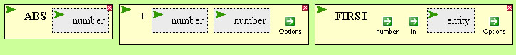
The things common to all function boxes are:
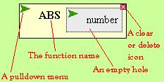
- The Pulldown Menu -- Revealed by mousing over the green arrow in the
upper left corner.
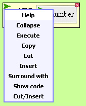
Clicking 'Help' will open a popup to that function's documentation.
Clicking 'Execute' will execute the function; the return value appears in the
results area.
- The Delete Icon -- Deletes the box from the workspace
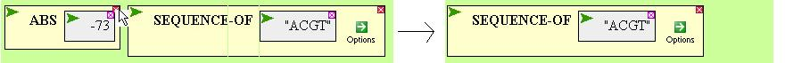
- Holes -- Where you pass arguments to the function. All holes are
grey and are initially empty. An empty hole is signified
by a dashed border and does not contain an argument. Executing a
function with an empty hole results in an error telling you to fill
it in, since, e.g., calling the ABS (absolute value) function without
passing a number makes no sense.
There are three basic ways to fill in a hole:
(See The Workspace for more)
A - Click the hole, turning it into a text input box, type in a value
and hit Enter.
Notice that once a hole is filled in, its border becomes solid.
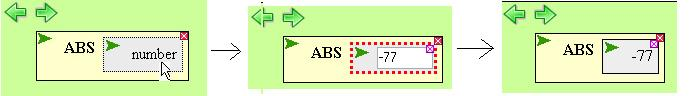
B- When the hole is too small for what you want to type in,
select 'Multiline input' from the hole's menu.
This brings up a larger input box that will resize as necessary
for whatever you type in. When you are done, click the Enter button
(not the Enter key on your keyboard of course, because that will just
insert a new line into your multiline input box).
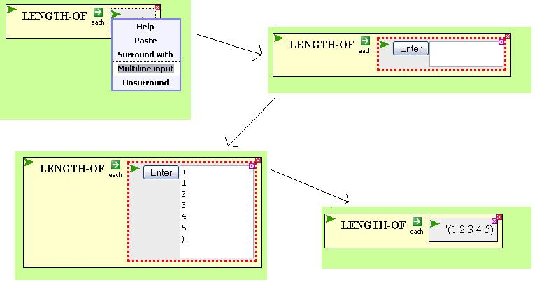
C - Click the hole, then select another function from the palette.
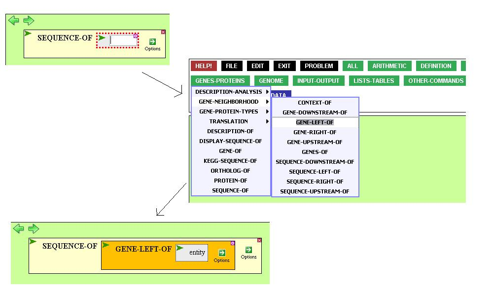
To clear the hole back to its empty state, click the Clear icon in the hole's
upper right corner.
The Clear icon is there whether the filled-in hole
is a simple value
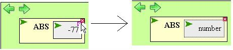
or another function call.
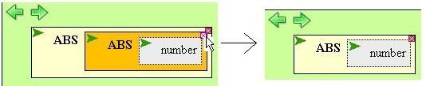
For simple values, you may also select 'Edit' from the hole's pulldown menu
to turn the hole back into a text-input box.
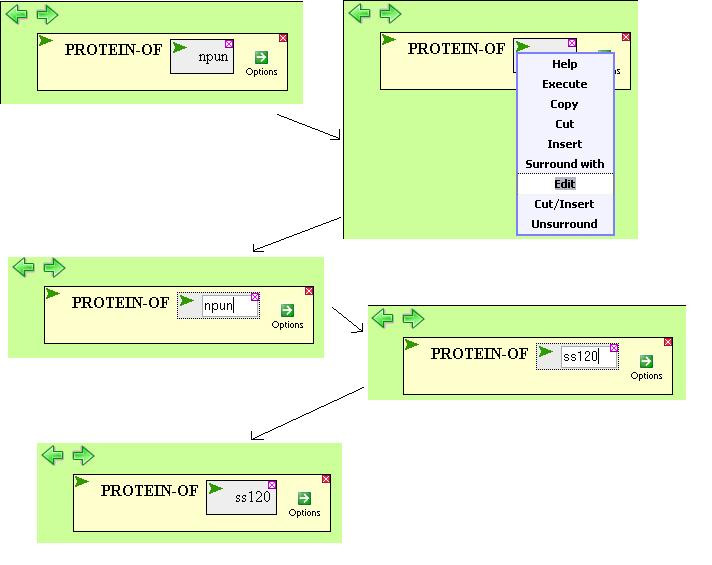
There are two other kinds of menus found in some function boxes.
Options menus are small green boxes containing white arrows with an
"Options" label beneath. These serve 2 purposes:
A - Adding more regular arguments
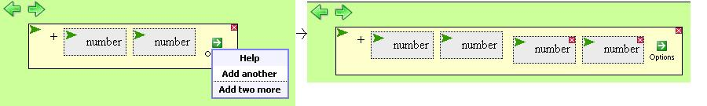
The + function normally has two empty holes, but the options menu
lets us add more with the 'Add one more' and 'Add two more' choices.
These new holes are the normal grey and have pulldown menus which include
the options 'Add left' and 'Add right', allowing you to add arguments
in precise locations, either before or after a specific argument.
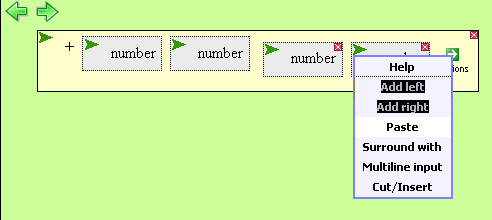
To remove a specific argument, first click the clear icon, then click the
delete icon.
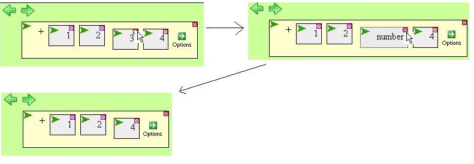
Clicking 'Clear' from the Options menu removes all new arguments
(the Clear option only appears after you have selected at least one optional
argument).
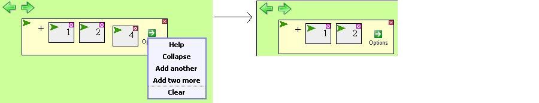
B - Adding optional arguments.
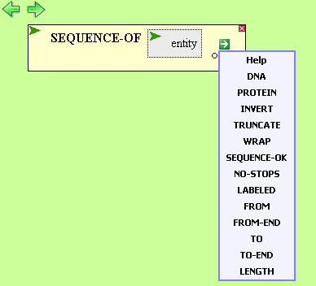
There are two kinds of optional arguments; those that require you to
fill in a value associated with the name of the argument, and those that
are simply the named argument (you can't tell the difference just
by looking at the menu; you would need to consult the documentation
via the Help option in the pulldown menu).
Optional arguments are blue and you can have as many of them as you like,
but you can only have one of each.
Selecting the 'PROTEIN' optional argument (one that has no
value associated with it) in the function SEQUENCE-OF,
for example, will check that the result contains only legal protein
characters.
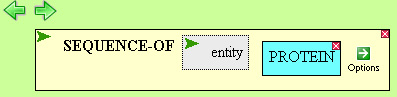
Two optional arguments that do have values associated with them are
are 'To' and 'From',
found in SEQUENCE-OF's Options menu. Filling these in appropriately
will cause the function to act only on a particular subsequence.
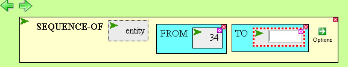
Clicking 'Clear' from the Options menu removes all optional arguments
(the Clear option only appears after you have selected at least one optional
argument).
Arrow menus are small green boxes containing a white arrow above a
lowercase label. Unlike Options menus, generally at most one choice can be selected.
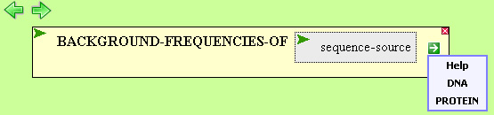>
The function BACKGROUND-FREQUENCIES-OF has two choices in its 'dna'
arrow menu: 'dna' or 'protein'. Whichever is selected governs the alphabet
used in determining frequency.
The function FIRST has two arrow menus, the first of which is labeled
'number'.
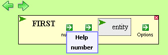>
Selecting 'number' from this
arrow menu brings up a new hole.
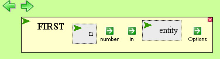
Choosing 'Clear' from the 'number' arrow menu will remove the hole.
VPL variables are also represented with boxes, called data boxes.
The major difference between these and function boxes is that they have
no holes to fill in. By selecting a variable from the data menu ...
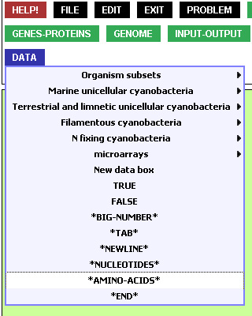
it can be brought down from the palette into the workspace...
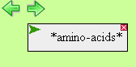
or as an argument to a function.
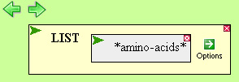